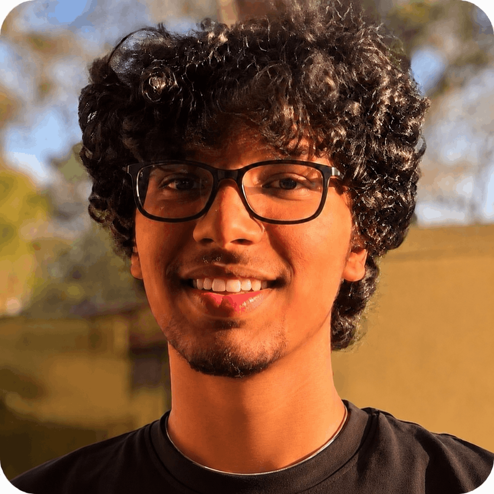

Building AI inference monitoring infrastructure for regulated industries
Building systems where AI can be proven.
I work across machine learning, computational neuroscience, and technical products. I like building systems that expose hidden structure: failure modes in model evaluation, accountability gaps in regulated AI, and reasoning deficits that standard metrics cannot see. Currently building Inferify, evidence infrastructure that seals every AI inference into a tamper-evident, SHA-256 hash-chained record with a regime verdict at decision time.

Currently building
/01Every model decision, sealed and provable.
Inferify writes a tamper-evident, SHA-256 hash-chained evidence record for every AI inference. A one-line SDK wraps any prediction call, hashes the input, checks whether the model was inside its validated operating envelope, and returns a signed regime verdict inline. When a decision is questioned months later - by a regulator, a lawyer, or an auditor - the proof already exists and anyone can verify it was never altered. Built on peer-reviewed research accepted at ICML 2026 formalizing why evaluation frameworks have structural blind spots. Supported by Microsoft, OpenAI, and IBM.
Python SDK
SHA-256 hash chaining
regime validity signal
FDA audit export
FastAPI
healthcare AI
EU AI Act
Builds & projects
/02Inferify
Microsoft · OpenAI · IBM
AI inference monitoring infrastructure for regulated industries. One-line SDK seals every model decision into a tamper-evident, hash-chained evidence record with a regime validity verdict at decision time. Built on ICML research.
Python SDKFastAPISHA-256healthcare AI
Pathspire
15k+ users · 20+ countries · solo built
Research and career opportunity platform for students without strong networks. Built, launched, and rebuilt through user feedback, improving matching from scattered discovery to a more systematic opportunity layer.
productmatchinggrowth
AIthena Research Group
independent lab · peer reviewed output
Co-founded an independent AI research group with 8 accepted research projects in quantitative finance, AI accountability, computational neuroscience, and trustworthy ML across CVPR, ICML, Stanford PAI, Brown, and UChicago.
MLresearchAI evaluation
Alzheimer's MRI Subtyping
CVPR 2026 · first author
Built a multimodal unsupervised discovery pipeline to identify hidden structural and functional subgroups in Alzheimer's MRI data, testing whether standard diagnostic labels hide meaningful variation.
PythonMRIclustering
Quantum Machine Learning Research
Google Quantum AI · AIMLSystems oral
Developed and benchmarked quantum inspired tensor decomposition methods for representation learning in high dimensional datasets, leading to a first author oral presentation at ACM AIMLSystems 2025.
tensor methodsrepresentation learning
Finly
11k+ learners
Free adaptive financial literacy platform with 1,000+ practice problems across 13 modules. Think Khan Academy for personal finance. Fiscally sponsored by Hack Club.
ReactSupabasenonprofit
Research output
/03CVPR 2026 · First author
Multimodal discovery of hidden Alzheimer's disease subtypes from MRI data.
Built an unsupervised ML pipeline for identifying structural and functional subgroups in Alzheimer's disease imaging data.
ACM AIMLSystems 2025 · First author oral
Quantum inspired tensor decomposition for representation learning.
Research conducted with Google Quantum AI on high dimensional representation learning using tensor methods.
ICML 2026 · PhilML
Beyond Accuracy: Epistemic Justification in Trustworthy Machine Learning.
Introduced Justification Deficit (the concept that predictive accuracy is insufficient for trustworthy ML because a model may be accurate without being epistemically justified)
Stanford PAI 2026
Corruption structure determines failure mode in MRI reconstruction.
Controlled k-space physics evaluation showing corruption structure determines qualitative failure character independently of severity, revealing failure modes invisible to standard PSNR evaluation.
Springer Nature · Journal of Economics, Race, and Policy
Do recreational cannabis laws narrow the Black/White gap in marijuana arrests?
Empirical analysis using staggered difference-in-differences estimation across states with varying legalization timelines.
Timeline
/042026
BuildFounded Inferify - AI inference monitoring infrastructure for regulated industries. Supported by Microsoft, OpenAI, and IBM.
2026
AcceptFirst author paper accepted at CVPR 2026 workshop on subtle visual computing.
2026
AcceptThree papers accepted at ICML 2026 EIML, PhilML, and FAGEN.
2026
SelectAdmitted to YC Startup School 2026 from 30,000+ applicants.
2025
PresentFirst author oral at ACM AIMLSystems from Google Quantum AI research collaboration.
2024
ResearchStarted Alzheimer's disease modeling work at Northwestern University Klein Lab with PI William Klein.
2023
ShipLaunched Pathspire to help students find research and career opportunities. Grew to 15,000+ users across 20+ countries solo.
Recognition
/05- CVPR 2026, First Author2026
- ACM AIMLSystems, First Author Oral2025
- ICML 2026, Three Workshop Papers2026
- Stanford PAI 20262026
- Brown MLSJ 2026, Oral Presenter2026
- YC Startup School2026
- Congressional App Challenge Winner2024
- Diamond Challenge Semifinalist2025
- PVSA Gold Recipient2025